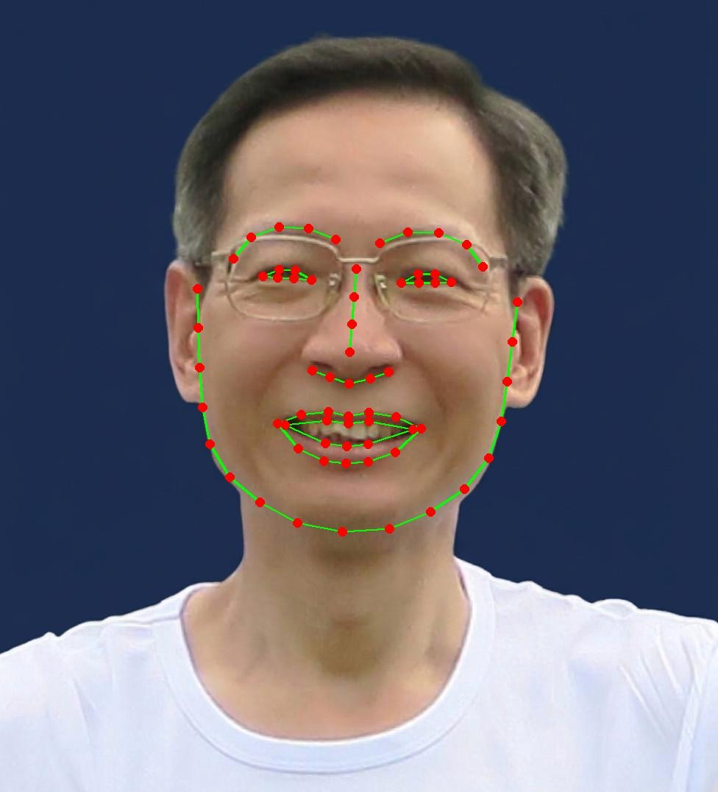

How does AI find the key points on your face?
In this note, we use the face_recognition library, which finds faces in a photo and the key points on each face.
The program is a modified version of the official example on this webpage: find_facial_features_in_picture.py.
Before and after

my_photo.jpg.
my_photo_landmarks.jpg.What the 72 points mark
The program groups the points by face part.
- Chin — 17 points, drawn as one open line around the jaw.
- Eyebrows — 5 points each, drawn as open lines.
- Nose — 4 points down the bridge and 5 across the tip.
- Eyes — 6 points each, joined back to the first to close the shape.
- Lips — 12 points for the top lip and 12 for the bottom, also closed shapes.
17 + 5 + 5 + 4 + 5 + 6 + 6 + 12 + 12 = 72.
How the program works
There are only four ideas in it. Each one below is a few lines of code, followed by what those lines do in plain words.
1. Load the photo and ask for the points
image = face_recognition.load_image_file("my_photo.jpg")
face_landmarks_list = face_recognition.face_landmarks(image)
pil_image = Image.fromarray(image)The first line reads the photo. The second line does the actual AI work: it finds every face in the picture, then returns the key points for each face. The third line turns the photo into something the program can draw on.
The result is a list with one entry per face. Our photo has one face, so the list has one entry.
2. Choose the size and colour of the marks
size = max(2, pil_image.width // 300)
color_line = (0, 255, 0)
color_point = (255, 0, 0)
A dot that looks right on a small photo disappears on a large one, so the size is worked out from
the photo's width. The // divides and drops the decimals: our photo is 976 pixels
wide, so 976 // 300 gives 3. max(2, 3) takes the bigger of the two
numbers, which is 3, so every dot and line is 3 pixels thick. A small photo always gets a size of
at least 2, so its marks still show.
color_line sets the line colour to green: the three numbers are the pixel values for
red, green and blue, so (0, 255, 0) means no red, full green and no blue.
color_point sets the dot colour to red, because (255, 0, 0) means full
red, no green and no blue.
3. Join the points of each face part
if facial_feature in ['left_eye', 'right_eye', 'top_lip', 'bottom_lip']:
d.line(points + [points[0]], fill=color_line, width=size)
else:
d.line(points, fill=color_line, width=size)Eyes and lips are closed shapes, so the program adds the first point again at the end of the list. The line then goes all the way round instead of leaving a gap. Chin, eyebrows and nose are open lines, so they are drawn as they are.
4. Draw a red dot on every point
for x, y in points:
d.ellipse([x - size * 2, y - size * 2, x + size * 2, y + size * 2], fill=color_point)A circle needs a box around it: left, top, right and bottom. Going 6 pixels each way from the point gives a dot 12 pixels across. The loop repeats this for every point of every face part.
pil_image.save("my_photo_landmarks.jpg")Finally the program saves the photo with the marks on it. That is the picture shown at the top of this note.
The whole program
The four pieces above, put back together. This is the complete file, 25 lines in all:
# https://github.com/ageitgey/face_recognition
# https://github.com/ageitgey/face_recognition/blob/master/examples/find_facial_features_in_picture.py
from PIL import Image, ImageDraw
import face_recognition
image = face_recognition.load_image_file("my_photo.jpg")
face_landmarks_list = face_recognition.face_landmarks(image)
pil_image = Image.fromarray(image)
# Make the dots and lines bigger for bigger pictures
size = max(2, pil_image.width // 300)
color_line = (0, 255, 0)
color_point = (255, 0, 0)
for face_landmarks in face_landmarks_list:
d = ImageDraw.Draw(pil_image)
# Each face part is a list of key points, e.g. 'chin' has 17 points
for facial_feature, points in face_landmarks.items():
print(facial_feature, len(points), "points")
# Eyes and lips are closed shapes, so join the last point back to the first
if facial_feature in ['left_eye', 'right_eye', 'top_lip', 'bottom_lip']:
d.line(points + [points[0]], fill=color_line, width=size)
else:
d.line(points, fill=color_line, width=size)
# Draw a dot on every key point
for x, y in points:
d.ellipse([x - size * 2, y - size * 2, x + size * 2, y + size * 2], fill=color_point)
pil_image.save("my_photo_landmarks.jpg")Running it on your own computer
Download the zip file and unzip it to
a folder. The zip holds all six programs in this series; this note uses
face01_landmarks.py. Add your own photo to that folder and name it
my_photo.jpg. Open the folder in Visual Studio Code, then type these three lines in
the terminal:
uv python pin 3.12.10
uv sync
uv run face01_landmarks.py
The first line records which Python version this folder uses. The second line installs every
package that pyproject.toml lists, so you do not have to add them one by one. The
third line runs the program, which saves the marked photo as my_photo_landmarks.jpg.
If you have not set up uv yet, start with How to install Visual Studio Code? and then the uv note for Windows or Mac.
Technical note: the face-recognition package depends on another package called
dlib. The project file in the zip already points to a prebuilt version of
dlib, so uv sync installs it ready to use and you do not need to
install a compiler.
What this is good for
Finding the points is step one of anything that has to act on a specific part of a face: putting on lipstick, changing the colour of eyebrows, etc. The interesting part is that the AI does the finding, while the choice of colour, thickness and style stays with you. That is a useful division of labour: the machine answers “where is the lip?”, and you decide what the lip should look like.